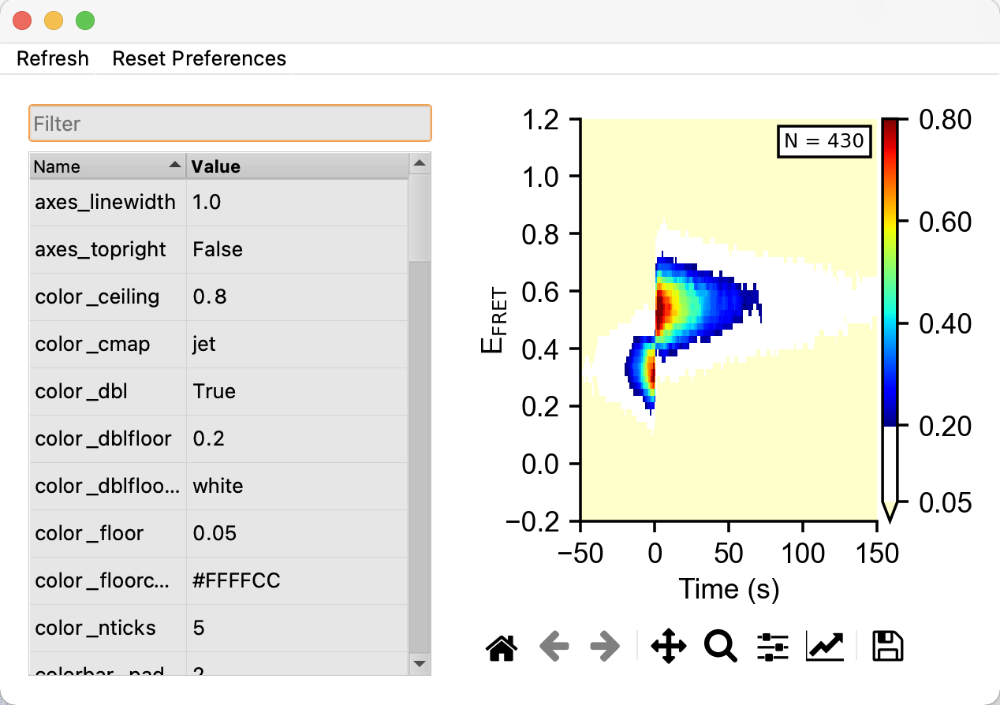
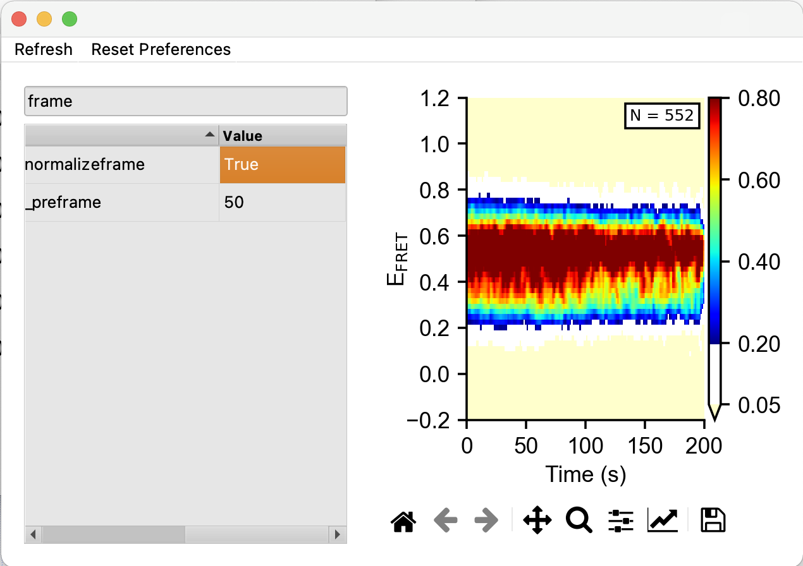

5. Plotting
One-Dimensional Histograms
The histogram feature of tMAVEN is primarily useful for visualization of data and not diagnostics. Navigate to Plots/FRET hist 1D to generate a one-dimensional histogram of all E\(_{fret}\) emission data, the peaks represent states and should look like K gaussians.

Notable preferences the user might want to change include:
hist_force_yto force the y axis valuehist_log_yputs the y-axis in log scalemodel_onwill toggle the model as described in Figurehist_falsetoggles the histogram itself, blue in the figurehist_colorwill change the color of the histogram
The save icon below the graph can be used to export the figure.
Two-Dimensional Histograms
The two-dimensional histograms in tMAVEN also have the axis of time. Generate by navigating Plots/FRET hist 2D The histogram is automatically smoothed by a median filter which setting can be changed (see below). One of the most useful capabilities is the choice of using post-synchronization. In this case, t=0 represents the time of transition from one specified state to another, see below. Note that post-synch can only operate once a model is run and transitions have been detected.

Useful preferences:
color_ceilingsets the ceiling for the color mappingcolor_dblenables two floorscolor_floor_coloris the lower floorcolor_cmapdetermines the color map, all matplotlib maps are supportedhist_smooth_medtoggles the use of a median filter on the graph andhist_smoothx/ydetermine the widths of this filtertime_dtchanges the time ticks, set to acquisition time to yield the same axis as traces whiletime_nbinschanges the length of time shown.hist_normalizeframewill normalize the histogram to mitigate photobleaching or additional transition at different times, see Figure
For post synchronization, tMAVEN will use the existing model which has identified transitions so users can essentially monitor all traces after a specific transition in a data set. Notice that N, number of traces used, will likely change since not all traces have all transitions. Small n represents the number of transitions measured not number of traces.
sync_postsynctoggles post synchronizationsync_singledwellset to true shows only the dwell before and after transition. In other words, a false setting will also show future transitions.sync_hmmstate_1shows the pretransition state whilesync_hmmstate_2shows the post transition state, input “-1” for any other state
